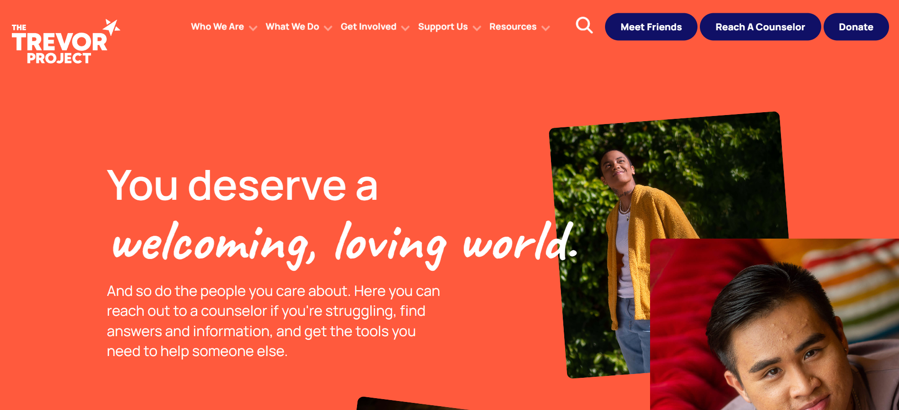
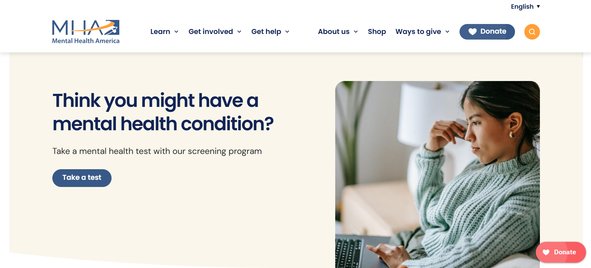

Link: https://www.thetrevorproject.org/The Trevor Project uses a clean and accessible interface that immediately communicates its purpose through strong typography, clear navigation, and impactful imagery. The website creates an emotional connection with users by combining personal stories, statistics, and calls to action. One strength is that resources are easy to find and users can quickly access support services. A potential weakness is that the large amount of information can feel overwhelming for first-time visitors. This project demonstrates how storytelling and data can work together to raise awareness about mental health issues.

Link: https://mhanational.org/Mental Health America presents information in a structured and easy-to-navigate format. The site uses visual hierarchy effectively, helping users find educational content, self-assessments, and resources. Interactive elements encourage users to engage with the material rather than simply read information. One drawback is that the website focuses heavily on informational content, which can make the experience feel less personal and emotional. This project provides a useful example of how data, resources, and user interaction can support mental health education.
Both websites provide examples of how mental health topics can be presented in an engaging and supportive way. My project will focus specifically on the experiences of Korean pastor's kids and use speculative design to explore possible future outcomes. I hope to combine the emotional storytelling found in The Trevor Project with the educational and interactive features used by Mental Health America. These examples help me understand how to balance research, user experience, and audience engagement in my own project.